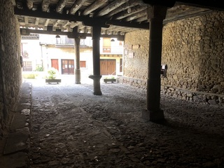
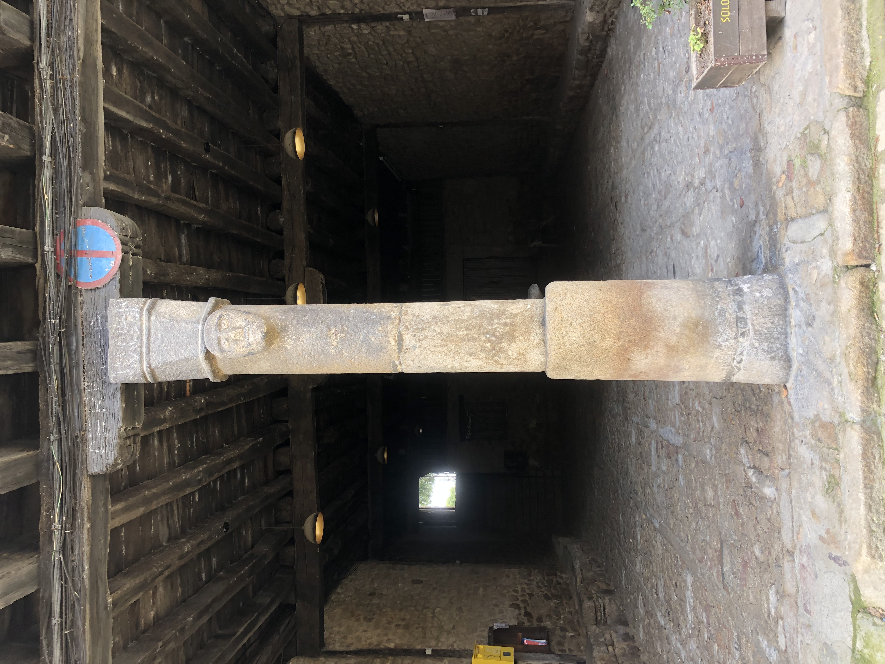

⛲
Verifica tu ubicación
Acércate a beber al caño mas alto de la Fuente para continuar la búsqueda del mensaje.
O ingresa el nombre:

Portalón: Siglo XVI, renacentista, lugar de reunion y comercio. ¡Busca aquí!

Detalles: Pilares de piedra tallados con motivos geométricos e inscripciones talladas.

Plaza: Punto de encuentro social y comercial.
Retos Visuales: Observa con atención
1. ¿Cuántos caños tiene la fuente?
2. ¿Qué decora los caños?
Quiz: Descubre el mensaje
1. ¿En qué siglo se construyó esta fuente?
2. ¿Qué estilo es la fuente?
3. ¿Qué río pasa cerca?
Fragmento del Mensaje: "bodega"
QR en el pueblo: FUENTE-1523 (en la plaza central).
Dato Curioso: Ya le preguntaré alguno a mis suegros jeje.